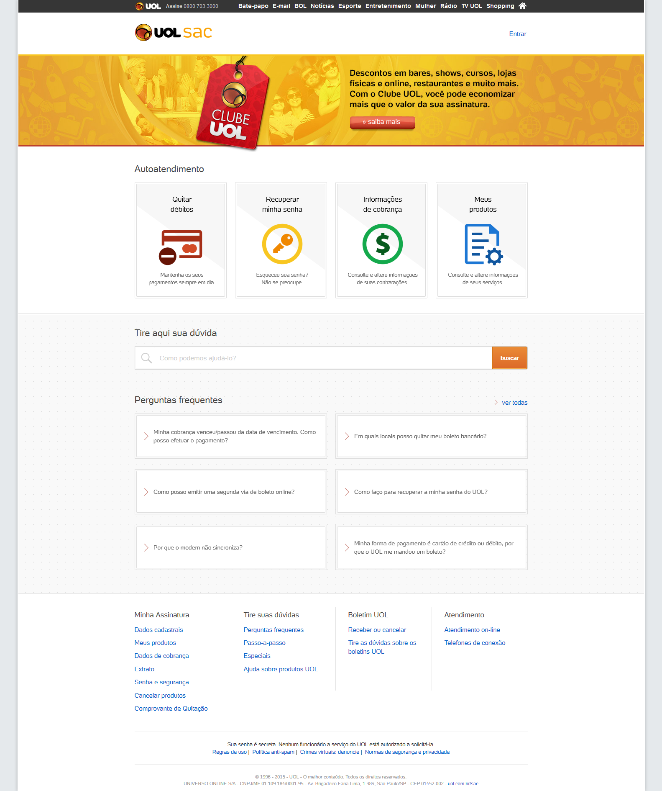
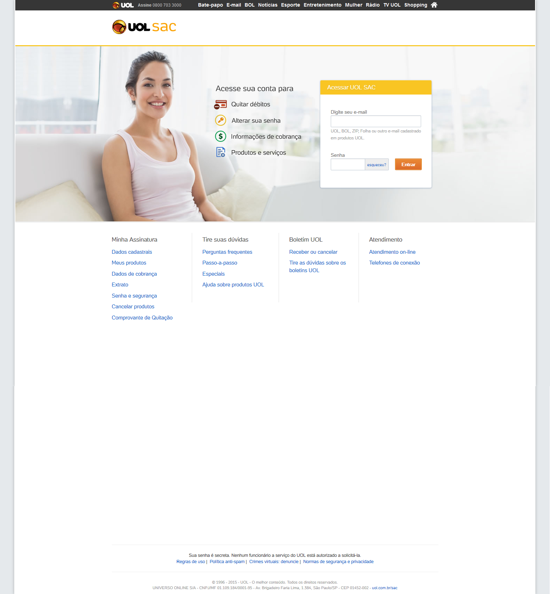
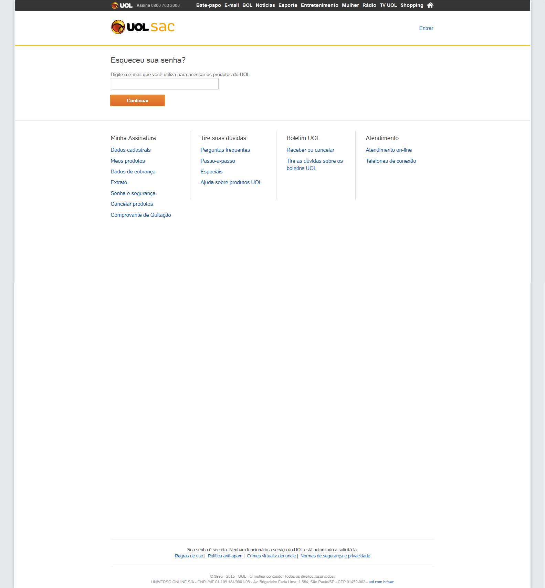

<section id="work"  >
    <main class="work-description" >
        <div layout-margin layout-padding >

            <h1 class="md-title" >UOL SAC: responsive activation</h1>

            <p>Privileging the user experience, our CEO asked us to turn off the responsiveness while the old pages stills on-line.</p>
            <p>But it wasn't so simple, to turn off an adaptive Bootstrap app brings some problems.</p>


            <div class="work-spacer" ></div>
            <p><h1 class="md-title">Main challenges:</h1></p>
            <p>
                <ul>
                    <li>UOL SAC is adaptive, not responsive, so hard code containers widths was useless.</li>
                    <li>We had to integrate more than 500 old HTML1 pages into the app via something that we called Wrapper, an iFrame with super powers</li>
                    <li>To adapt the browser viewport dinamicaly to support old pages width</li>
                    <li>Suddenly run away from i.e. 8 support </li>
                    <li>To refactor a lot of unit tests, that broken with Wrapper concept</li>
                    <li>Be the first team in UOL to use and evolve it's brand new Custom Bootstrap</li>
                    <li>To discover that Native Bootstrap do not support Angular and say hello to Angular UI.</li>
                </ul>
            </p>

            <div class="work-spacer" ></div>

            <div class="work-spacer" ></div>

            <div layout="row" layout-fill layout-wrap >

                <md-card class="noselect no-pointer"  layout="column" flex >
                    
                    <div class="md-actions" layout="row" layout-align="end center">
                        <md-button class="md-warn md-default-theme"  ng-href="https://sac.uol.com.br/" target="_blank" >Go to</md-button>
                    </div>
                </md-card>

                <md-card class="noselect no-pointer"  layout="column" flex >
                    
                    <div class="md-actions" layout="row" layout-align="end center">
                        <md-button class="md-warn md-default-theme"  ng-href="https://sac.uol.com.br/#/login" target="_blank" >Go to</md-button>
                    </div>
                </md-card>

                <md-card class="noselect no-pointer"  layout="column" flex >
                    
                    <div class="md-actions" layout="row" layout-align="end center">
                        <md-button class="md-warn md-default-theme"  ng-href="https://sac.uol.com.br/#/recuperarsenha" target="_blank" >Go to</md-button>
                    </div>
                </md-card>

            </div>


        </div>

        <md-button id="close-job" ng-if="current" class="md-fab md-warn " aria-label="Job List" ng-click="setCurrent(false)" >
            
        </md-button>

    </main>
</section>
